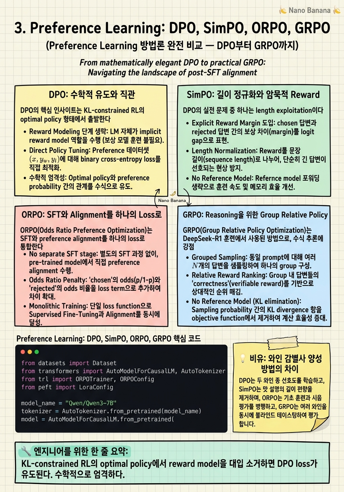

Preference Learning: DPO, SimPO, ORPO, GRPO

🎯 학습 목표
- DPO가 PPO의 optimal solution에서 reward를 제거하고 log ratio만 남기는 수학적 유도를 설명할 수 있다
- SimPO의 length normalization이 verbosity bias를 해결하는 원리를 설명할 수 있다
- ORPO의 odds ratio loss가 SFT loss와 어떻게 결합되는지 수식으로 설명할 수 있다
- GRPO가 value model 없이 group advantage를 계산하는 방법을 설명할 수 있다
- 데이터 가용성과 목적에 따라 어떤 방법을 선택할지 근거를 제시할 수 있다
RLHF/PPO는 강력하지만 4개 모델을 동시에 관리해야 하는 복잡성과 메모리 부담이 크다. 이 문제를 해결하기 위해 offline preference learning 방법들이 등장했다. 이들은 공통적으로 사전 수집된 선호 데이터 \((x, y_w, y_l)\)를 사용하고, 명시적 reward model 없이 policy를 직접 최적화한다.
DPO는 그 출발점이다. PPO의 최적해를 분석하면 reward model이 log ratio of policies로 표현된다는 것을 발견하고, 이를 역이용하여 reward model 없이 preference를 직접 학습한다. SimPO는 DPO의 verbosity 문제를 해결하고, ORPO는 SFT 단계마저 통합하며, GRPO는 reasoning 특화 on-policy 방식으로 확장된다.
이 챕터에서는 각 방법의 수식을 유도하고, 실전에서 어떤 상황에 어떤 방법을 선택해야 하는지의 판단 기준을 명확히 한다.
핵심 내용
DPO: 수학적 유도와 직관
DPO의 핵심 인사이트는 KL-constrained RL의 optimal policy 형태에서 출발한다. 다음 목표를 최적화하는 policy \(\pi^*\)의 closed-form 해는:
\[\pi^*(y|x) = \frac{1}{Z(x)} \pi_{ref}(y|x) \exp\left(\frac{r(x,y)}{\beta}\right)\]
이를 reward에 대해 풀면:
\[r(x,y) = \beta \log \frac{\pi^*(y|x)}{\pi_{ref}(y|x)} + \beta \log Z(x)\]
Bradley-Terry 모델의 선호 확률에 이 reward를 대입하면, \(Z(x)\)가 상쇄되어 다음 DPO loss를 얻는다:
\[\mathcal{L}_{DPO} = -\mathbb{E} \left[ \log \sigma \left( \beta \log \frac{\pi_\theta(y_w|x)}{\pi_{ref}(y_w|x)} - \beta \log \frac{\pi_\theta(y_l|x)}{\pi_{ref}(y_l|x)} \right) \right]\]
직관적으로: 선호 응답(\(y_w\))의 log ratio(policy vs reference)를 높이고, 비선호 응답(\(y_l\))의 log ratio를 낮추도록 학습한다. PPO와 달리 온라인 sampling이 필요 없고, 2개 모델(policy + reference)만으로 훈련이 가능하다.
SimPO: 길이 정규화와 암묵적 Reward
DPO의 실전 문제 중 하나는 length exploitation이다. Reference model이 없는 암묵적 reward 신호가 길이에 민감하게 반응하여, 더 긴 응답을 선호하는 verbosity bias가 발생한다.
SimPO는 이를 두 가지 혁신으로 해결한다:
첫째, reference-free implicit reward: 시퀀스 평균 로그 확률을 reward로 사용한다. \[r_{SimPO}(x, y) = \frac{1}{|y|} \log \pi_\theta(y|x) = \frac{1}{|y|} \sum_{t=1}^{|y|} \log \pi_\theta(y_t|y_{<t}, x)\]
길이 \(|y|\)로 나눔으로써 긴 응답에 유리한 편향을 제거한다.
둘째, target margin \(\gamma\): 선호 응답과 비선호 응답 사이에 최소 margin을 강제한다: \[\mathcal{L}_{SimPO} = -\mathbb{E} \left[ \log \sigma \left( \frac{\beta}{|y_w|} \log \pi_\theta(y_w|x) - \frac{\beta}{|y_l|} \log \pi_\theta(y_l|x) - \gamma \right) \right]\]
Reference model이 필요 없기 때문에 메모리와 연산이 DPO보다 추가로 절약된다.
ORPO: SFT와 Alignment를 하나의 Loss로
ORPO(Odds Ratio Preference Optimization)는 SFT와 preference alignment를 하나의 학습 단계로 통합한다. 이는 DPO가 SFT 이후에 별도로 실행되는 것과 달리, 처음부터 instruction following과 선호 학습을 동시에 수행한다는 의미다.
ORPO의 loss는 두 항의 합이다: \[\mathcal{L}_{ORPO} = \mathcal{L}_{SFT} + \lambda \cdot \mathcal{L}_{OR}\]
\(\mathcal{L}_{SFT}\)는 선호 응답(\(y_w\))에 대한 일반 NLL loss이고, \(\mathcal{L}_{OR}\)은 odds ratio 기반 penalty다: \[\mathcal{L}_{OR} = -\mathbb{E} \left[ \log \sigma \left( \log \frac{\text{odds}_\theta(y_w|x)}{\text{odds}_\theta(y_l|x)} \right) \right]\]
여기서 \(\text{odds}(y|x) = \frac{\pi_\theta(y|x)}{1 - \pi_\theta(y|x)}\)는 생성 확률의 odds다.
ORPO의 강점은 reference model이 전혀 필요 없다는 것이다. Reference model 대신 모델 자신의 '거부하는 경향'을 penalty로 활용한다. [EMNLP 2024에 발표된 원 논문](https://arxiv.org/abs/2403.07691)에서 Llama-3, Mistral, Phi-2에서 DPO 대비 동등하거나 우수한 성능을 보였다.
GRPO: Reasoning을 위한 Group Relative Policy
GRPO(Group Relative Policy Optimization)는 DeepSeek-R1 훈련에서 사용된 방법으로, 수학적 추론 같이 결과의 정확성을 binary 또는 scalar로 판단할 수 있는 태스크에 특화되어 있다.
GRPO의 핵심은 value model을 제거하고 group advantage를 사용하는 것이다. 동일한 prompt \(x\)에 대해 \(G\)개의 응답을 샘플링하고, 각 응답의 reward를 그룹 내에서 정규화하여 advantage를 계산한다:
\[\hat{A}_{i,t} = \frac{r_i - \text{mean}(r_1, \ldots, r_G)}{\text{std}(r_1, \ldots, r_G)}\]
이 advantage가 각 토큰의 가중치로 사용된다. Value model 없이도 상대적인 응답 품질을 평가할 수 있어 메모리 효율이 높다.
중요한 점은 GRPO가 verifiable reward를 가진 태스크에 적합하다는 것이다 — 수학 문제의 정답 여부, 코드의 테스트 통과 여부 같은 명확한 reward signal이 있는 경우. 오픈엔드 텍스트 생성에는 reward 설계가 어렵기 때문에 제한적이다.
방법론 비교 및 선택 가이드
각 방법의 핵심 특성을 비교한다:
| 방법 | Reference Model | SFT 필요 | 온라인 여부 | 주요 장점 |
|---|---|---|---|---|
| DPO | ✓ 필요 | ✓ 별도 | ✗ Offline | 수학적 견고성 |
| SimPO | ✗ 불필요 | ✓ 별도 | ✗ Offline | Verbosity bias 제거 |
| ORPO | ✗ 불필요 | ✗ 통합 | ✗ Offline | 단일 단계, 간결 |
| GRPO | ✗ 불필요 | ✓ 별도 | ✓ Online | Reasoning 특화 |
| PPO | ✓ 필요 | ✓ 별도 | ✓ Online | 최고 성능 상한 |
선택 가이드: 리소스가 제한적이고 preference 데이터가 있으면 ORPO, verbosity가 문제면 SimPO, 수학/코딩 reasoning 특화라면 GRPO, 최고 성능이 목표이고 리소스가 충분하면 PPO가 좋은 출발점이다.
주의: 2026년 3월 발표된 연구([arxiv 2603.19335](https://arxiv.org/pdf/2603.19335))는 약 240회의 통제된 실험에서 알고리즘 간 성능 차이는 ~1pp에 불과하고 모델 스케일이 ~50pp를 결정한다고 밝혔다. 즉 어떤 방법을 쓰느냐보다 모델 크기와 데이터 품질이 훨씬 중요하다.
💡 비유로 이해하기
RLHF/PPO는 전문 소믈리에(reward model)를 따로 양성한 후, 그 소믈리에의 평가를 받아 와인 제조법(policy)을 개선하는 방식이다. 가장 정확하지만 두 명의 전문가를 동시에 고용해야 한다.
DPO는 '과거의 마스터 소믈리에(reference model)가 했던 평가 기록'을 직접 분석해서 와인 제조법을 개선하는 방식이다. 현직 소믈리에 없이도 가능하지만, 과거 기록에 의존하기 때문에 최신 트렌드를 반영하지 못할 수 있다.
ORPO는 견습생(policy)이 스스로 '이 와인은 마셔야 한다/마시지 말아야 한다'를 판단하면서 동시에 제조 기술을 익히는 방식이다. 가장 단순하고 효율적이지만, 자신의 판단 기준을 스스로 개선해야 한다는 부트스트래핑 문제가 있다.
💻 코드 예시
ORPO는 reference model 없이 SFT와 preference alignment를 동시에 수행한다. TRL의 ORPOTrainer를 사용한 Qwen3 구현 예시다.
from datasets import Dataset
from transformers import AutoModelForCausalLM, AutoTokenizer
from trl import ORPOTrainer, ORPOConfig
from peft import LoraConfig
model_name = "Qwen/Qwen3-7B"
tokenizer = AutoTokenizer.from_pretrained(model_name)
model = AutoModelForCausalLM.from_pretrained(
model_name, torch_dtype="bfloat16", device_map="auto"
)
# Preference dataset: chosen은 선호, rejected는 비선호 응답
# format: {"prompt": [...messages...], "chosen": [...], "rejected": [...]}
def format_preference(example):
return {
"prompt": tokenizer.apply_chat_template(
example["prompt"], tokenize=False, add_generation_prompt=True
),
"chosen": tokenizer.apply_chat_template(
example["chosen"], tokenize=False
),
"rejected": tokenizer.apply_chat_template(
example["rejected"], tokenize=False
),
}
orpo_config = ORPOConfig(
output_dir="./qwen3-orpo",
learning_rate=8e-6, # ORPO는 DPO보다 낮은 LR 권장
beta=0.1, # lambda (odds ratio 가중치)
max_length=2048,
max_prompt_length=512,
per_device_train_batch_size=2,
gradient_accumulation_steps=8,
num_train_epochs=1,
bf16=True,
remove_unused_columns=False,
)
lora_config = LoraConfig(
r=32, lora_alpha=64,
target_modules=["q_proj", "v_proj", "k_proj", "o_proj"],
)
trainer = ORPOTrainer(
model=model,
args=orpo_config,
train_dataset=dataset.map(format_preference),
peft_config=lora_config, # reference model 없이 LoRA만 업데이트
tokenizer=tokenizer,
)
trainer.train()beta=0.1은 ORPO의 \(\lambda\) 값으로 odds ratio penalty의 강도를 조절한다. Reference model이 없기 때문에 메모리가 DPO보다 절약된다. max_prompt_length=512는 prompt 부분을 잘라 전체 시퀀스 내에서 응답 부분에 충분한 공간을 확보한다. LoRA는 policy와 'reference' 역할을 동시에 수행하는 모델에서 adapter만 업데이트하도록 한다.
🏭 현업에서의 평가
✅ 시니어가 보는 것
- 각 방법의 수식 유도를 이해하고 직관적으로 설명하는 능력
- Scale이 알고리즘 선택보다 중요하다는 최신 연구 인식
- 데이터 품질이 방법론 차이보다 결과에 더 큰 영향을 준다는 이해
- Verbosity bias, length exploitation 등 실전 문제 경험
- On-policy vs offline의 trade-off를 리소스 관점에서 설명하는 능력
⚠️ 레드 플래그
- DPO가 PPO보다 항상 열등하다고 생각하는 경우 (태스크와 리소스에 따라 다름)
- 알고리즘이 성능의 주요 결정 요소라고 생각하는 경우 (스케일이 더 중요)
- Preference 데이터의 품질 검증 방법을 제시하지 못하는 경우
- 각 방법의 하이퍼파라미터(beta 값 등) 선택에 근거가 없는 경우
🎤 예상 인터뷰 질문
- DPO와 PPO가 같은 데이터와 모델로 훈련될 때 성능 차이가 나는 이유는 무엇인가요?
- ORPO를 DPO 대신 선택하는 상황과 그 근거를 설명해주세요.
- Preference 데이터에 노이즈가 많을 때 각 방법들이 어떻게 다르게 영향을 받나요?
✨ 핵심 요약
DPO는 PPO의 closed-form 해
KL-constrained RL의 optimal policy에서 reward model을 대입 소거하면 DPO loss가 유도된다. 수학적으로 엄격하다.
SimPO는 길이 편향을 해결
평균 로그 확률 + margin으로 reference model 없이 verbosity bias를 제거한다.
ORPO는 단일 단계 통합
SFT + 선호 학습을 하나의 loss로 통합. Reference model 없이 동작한다. EMNLP 2024 발표.
GRPO는 reasoning 특화 on-policy
같은 prompt에서 G개 샘플링 후 그룹 내 정규화로 advantage 계산. Value model 불필요.
스케일 > 알고리즘 선택
2603.19335: 알고리즘 차이 ~1pp, 모델 스케일 ~50pp. 더 나은 알고리즘보다 더 큰 모델 또는 더 좋은 데이터가 중요하다.
Verifiable reward가 GRPO의 전제
수학 정답, 코드 테스트 등 명확한 reward signal이 있어야 한다. 오픈엔드 생성에는 reward 설계가 병목이다.
Offline은 효율, Online은 성능
DPO/SimPO/ORPO는 사전 수집 데이터로 학습(효율적). GRPO/PPO는 온라인 생성으로 학습(성능 상한 높음).
데이터 품질이 방법론보다 중요
노이즈 많은 preference 데이터로는 어떤 방법도 효과가 없다. 수집 파이프라인과 검증이 핵심이다.